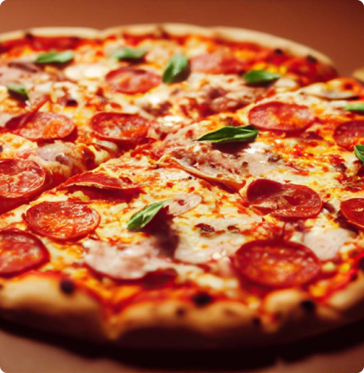

Na Pizza Zone, cada mordida é mais do que uma simples experiência gastronômica é uma verdadeira viagem sensorial que te transporta diretamente para o coração da Itália, onde a arte de fazer pizza é levada a sério há séculos. Desde o momento em que você dá a primeira mordida, é como se você estivesse passeando pelas charmosas ruas de Nápoles, sentindo o aroma irresistível de uma autêntica pizzaria italiana.
Nossas pizzas são preparadas com uma combinação inigualável de ingredientes frescos e cuidadosamente selecionados, garantindo que cada sabor seja intenso, vibrante e absolutamente delicioso. Nossa massa, preparada artesanalmente, é resultado de uma receita que passa de geração em geração, e cada pedaço reflete o amor e a dedicação que temos pela criação de uma pizza perfeita.